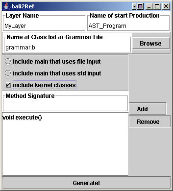

|
|
The bali2layer Tool |
Languages can be modularly extended to support new features. The approach that AHEAD takes is to assemble preprocessors for extended-host-languages from layers. A language or a language extension can be defined by two layers: syntax and semantics. A syntax layer in AHEAD consists of a grammar specification and a set of classes generated by bali2jak. Semantic actions are added to classes in semantic layer, which will be composed to syntax layer as a refinement to it.
AHEAD provides a comprehensive set of tools for building domain-specific languages (DSLs). bali2layer is a tool to generate a semantic layer that consists of a collection of class templates, in which users can add semantic actions. This document gives an introduction to bali2layer tool.
Starting bali2layer |
To run bali2layer, type
> bali2layer
The bali2layer window comes up (see figure below).
The bali2layer GUI contains a set of options:
Input a Layer Name |
By default, the layer name is the directory where bali2layer starts. You can specify another name in this text field.
Input Name of Class List or Grammar File |
In order to generate a layer for a grammar, you need to specify either a Bali grammar file with .b extension, or a file containing a list of classes that are to be generated. Given a Bali grammar file, bali2layer will generated a class for each production and named rule. Otherwise, bali2layer will generate a class for each name in the class list file.
Note: a Bali grammar file must end with a .b extension, otherwise bali2layer will assume that this is a class list file.
Input Name of Start Production |
A Bali grammar can be either a definition of a new language or an extension to an existing one. In the latter case, it contains a "require" statement. Given a .b file defining a new language, the name of start production is the left side of the first production. Otherwise, the user need to specify a start production name, By default, it is AST_Program.
Select Template Class Options |
note: the code that bali2layer generates is correct if void methods are used. However, if non-void methods are used, e.g., "int execute(int x)", bali2layer generates files which you will have to edit manually. The reason is that bali2layer doesn't know what code would be used to generate values As a general rule though, void methods are typically the only ones that you'll likely use.

After giving layer name, start production name, grammar or class list file, and make selections on the three check boxes, you can click "Generate!" button to generate the class templates for your layer. Later you can add semantic actions to these classes. To see how bali2layer is used, consult How to Build a Translator for a DSL.
Copyright © Software Systems Generator Research Group.
All rights reserved.
Revised: 01/25/06.